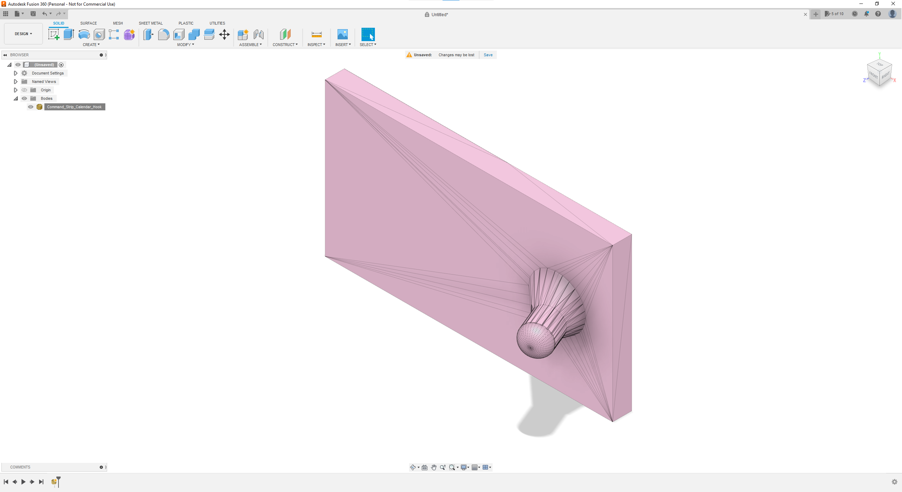
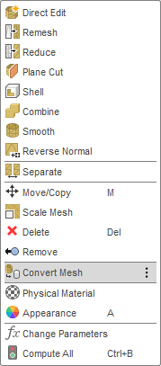
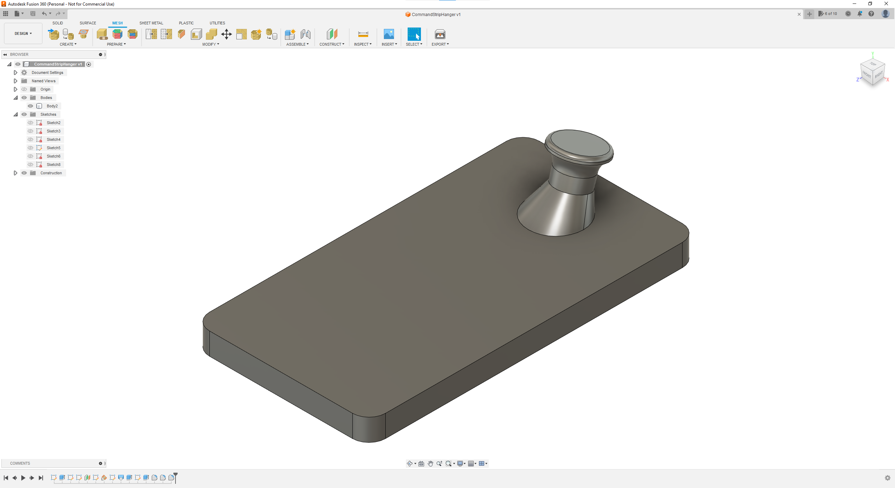
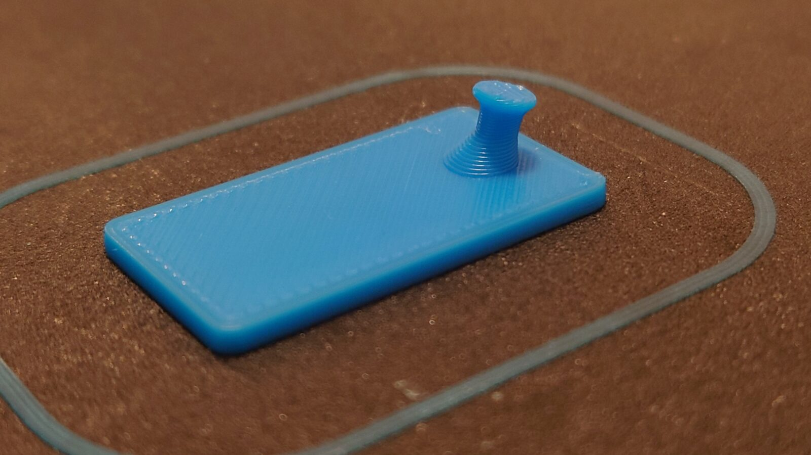
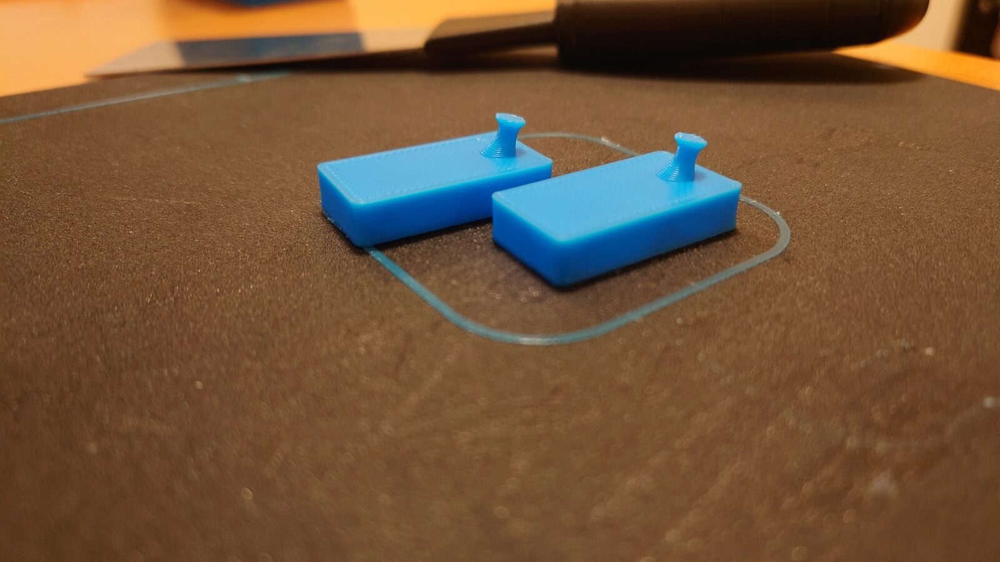
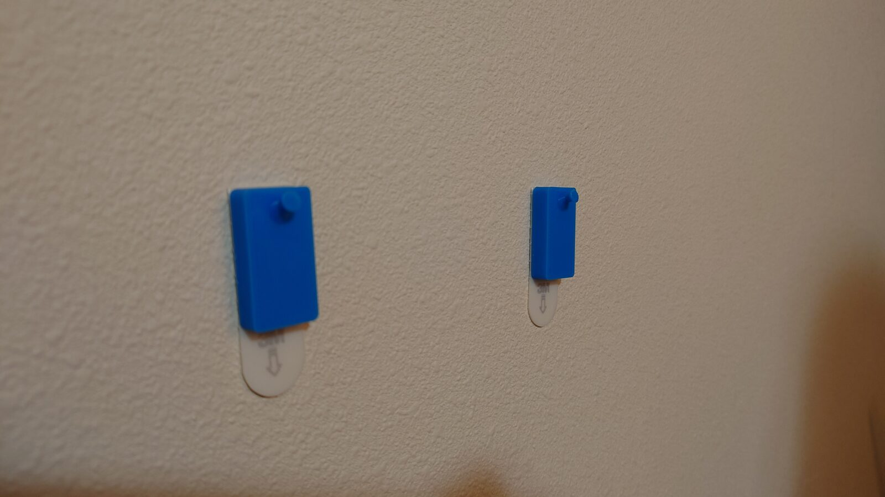
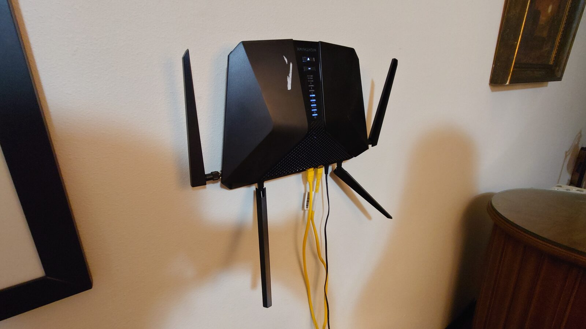

Making Router Hangers
Designing wall hangers in Fusion for a router and access points, from the first print to the wall.

Fusion docs aren't up to date. I've been looking for this option for days now

but often I find it's only useful for extracting measurements from other people's designs. I ended up making my own from scratch - taking a lot of inspiration from the one I found online.

I'm trying to add a knob at the end so I can do things like hang router/access points. We'll see how it goes!
The first one came out good!

I made some measurements on the back of my Router to make one last adjustment - as it's little rubber feet will make it stand off of the wall a tad.

Here they are on the wall and with the router!


I'll probably move the router so that the wires can hide behind a cabinet or shelf, but it's still very exciting to be able to manufacture small solutions in under an hour like this. (The total print time for the two hangers was 28 minutes)